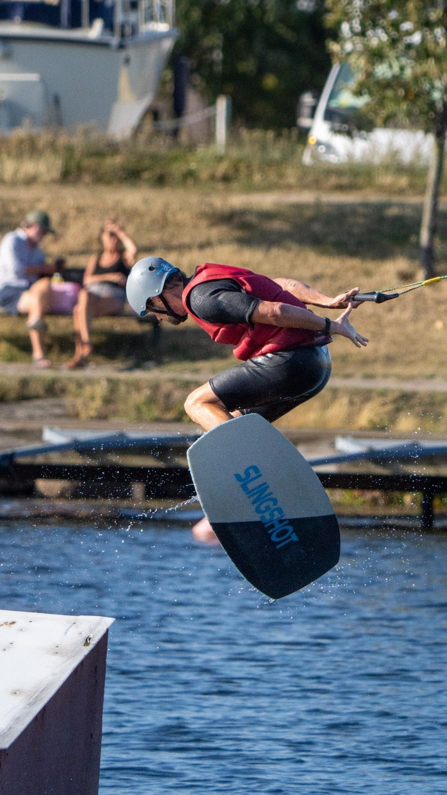
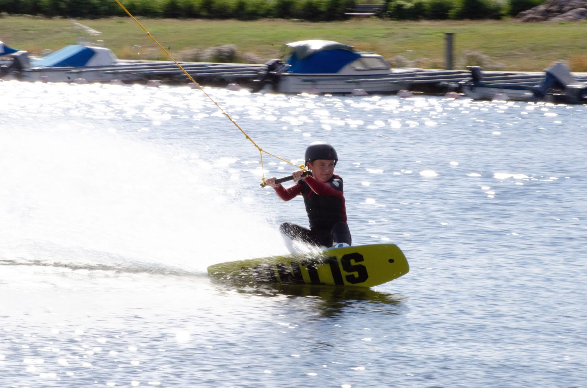
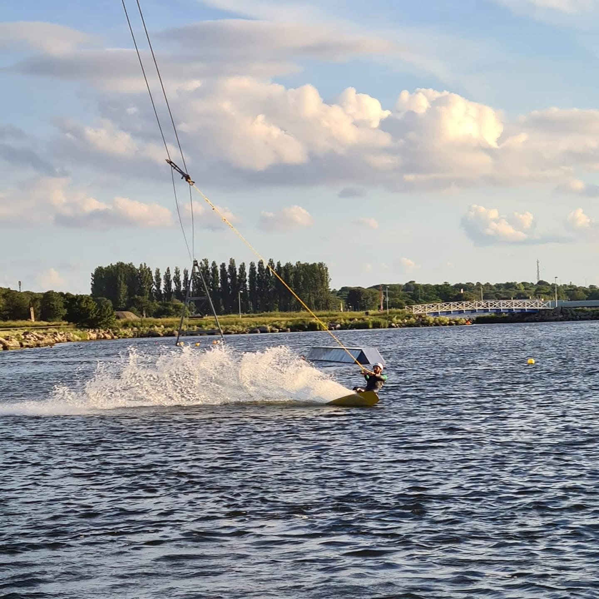
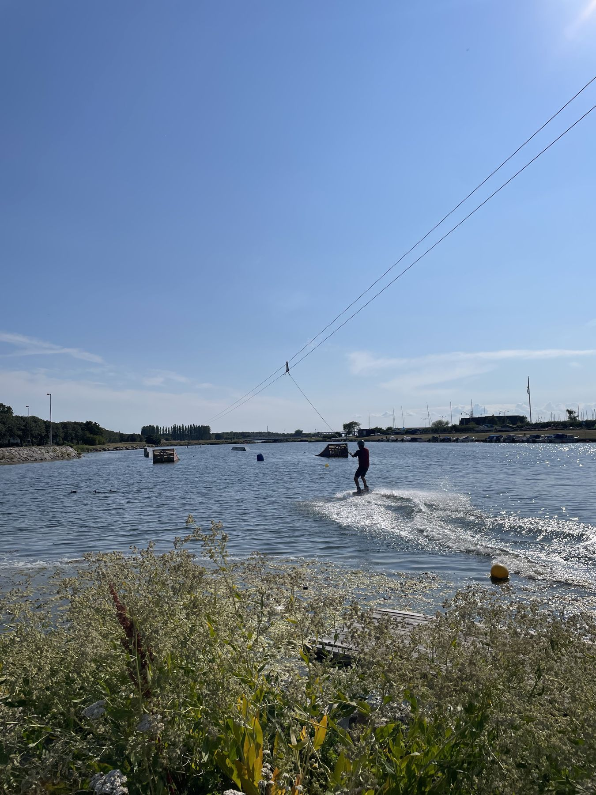
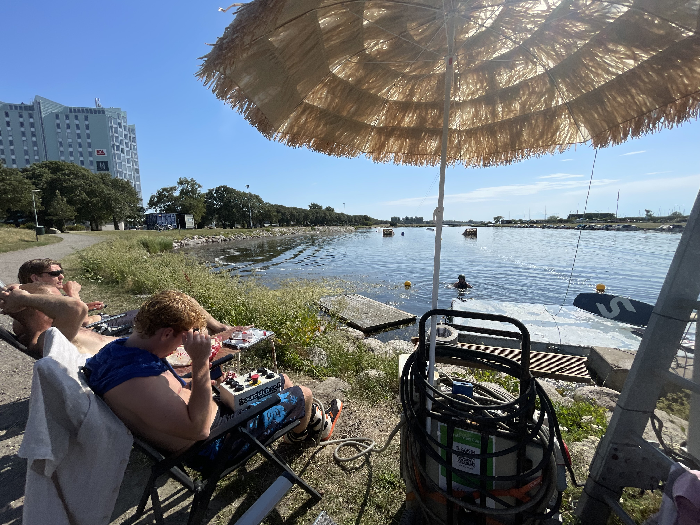

Prova på
Öppen Åkning – söndagar kl 12–16
Välkommen att prova på Öppen Åkning, söndagar kl 12–16. Kolla vår Instagram eller Facebook för att se om vi har öppet, väder och vind styr ibland. All utrustning och coachning ingår. Nybörjare helt utan erfarenhet såväl som erfarna åkare är välkomna. Vi hjälper alla komma upp på vattnet!
Drop in – ingen tidsbokning. Betala med Swish på plats till 123 162 85 69.
Passar inte tiden? Om ni är några stycken kan vi ibland hitta andra tider som fungerar. Hör av er på sms eller mail och fråga!
Priser
| Prova på (upp till och med 18 år), 10 minuter | 150 kr |
| Prova på vuxen | 200 kr |
Boka hela wakeparken
Om ni är fler personer och vill boka hela wakeparken bara för er till företagsevent, kick-off, teambuilding, kompisgänget, möhippan, svensexan… kan ni göra det till följande priser:
| 1,5 timme (lämpligt för max 6 personer) | 2000 kr |
| 2,5 timme | 3000 kr |
| 3,5 timme | 4000 kr |
Vill du åka så mycket du vill hela säsongen? Se Bli medlem.
Bli medlem
Vill du bli medlem i Skånes Kabelsportförening och åka så mycket du vill i Skåne Wakepark? Medlemskapet gäller i 12 månader och vår säsong brukar vara från april till oktober.
Som medlem blir du en del av vår gemenskap och får möjlighet att engagera dig i föreningen – allt från att fixa i parken och hjälpa till vid event till att vara med när vi har Öppen Åkning på söndagar. Är du vuxen får du också möjlighet att lära dig köra systemet.
Vi är en ideell och inkluderande förening där vi hjälper och peppar varandra, har kul och utvecklas tillsammans på vattnet. Här finns allt från nybörjare till riktigt grymma åkare, unga och gamla, tjejer och killar.
Vi bestämmer tillsammans när vi kör och håller kontakten via vår WhatsApp-grupp.
| Medlemskap (upp till och med 18 år), 12 mån | 1500 kr |
| Medlemskap vuxen, 12 mån | 2500 kr |
Friskvårdskvitto ordnas på begäran.
Nyfiken? Kom ner och snacka med oss när vi är i parken eller ring 0708-96 90 33 om du vill veta mer!
Galleri





Vanliga frågor
Vilka öppettider har ni?
Öppen Åkning på söndagar kl 12–16. Väder och vind kan ibland göra att vi ställer in, så kolla vår Facebook eller Instagram innan du kommer.
Behöver jag egen utrustning?
Nej, du behöver ingen egen utrustning eller erfarenhet för att prova. All utrustning och coachning ingår. Kom förbi under våra öppettider så hjälper vi dig igång.
Måste jag vara medlem för att prova på?
Nej. Du kan prova på och betala på plats utan medlemskap.
Behöver jag boka i förväg?
Nej, på söndagar är det drop in som gäller. Om vi är och åker andra tider kan du fråga oss direkt nere i parken om vi kan köra dig – det brukar ofta lösa sig. Är ni en grupp eller vill boka hela parken hör ni av er till oss innan, se kontaktuppgifter.
Är det nybörjarvänligt?
Ja, alla är välkomna – från nyfikna nybörjare till de som åker varje dag. De som kör systemet och instruerar har stor erfarenhet av att åka wakeboard och lära ut på ett pedagogiskt sätt.
Finns det parkering?
Ja, det finns gratis parkering 4 timmar med p-skiva i Småbåtshamnen (på vänster sida av Bryggövägen). Det finns även betalparkering i Limhamn.
Finns det toalett?
Ja, det finns en fräsch offentlig toalett 30 meter bort vid Strandgatan.
Var byter jag om?
Du kan byta om avskilt inne i vår wakeboard-container.
Om oss
Skåne Wakepark drivs av Skånes Kabelsportförening – en ideell förening med en stor kärlek till wakeboard och gemenskapen runt sporten.
Vår wakepark ligger i Limhamn i Malmö och hos oss är alla välkomna – från dig som aldrig stått på en wakeboard tidigare till dig som redan är en van åkare. Vi vill vara en plats där man kan lära sig, utvecklas, träffa andra och framför allt ha kul tillsammans.
Barn och ungdomar ligger oss extra varmt om hjärtat. Genom bland annat vår nybörjarskola vill vi ge fler chansen att upptäcka wakeboard i en trygg, avslappnad och välkomnande miljö.
Skåne Wakepark bygger på ideellt engagemang. Tillsammans hjälps vi åt att hålla parken igång, utveckla sporten och skapa en plats där människor trivs – både på vattnet och på land.
Kontakt & hitta hit
Vi finns i närheten av Strandgatan 50 i Limhamn, Malmö.
Telefon / sms: 0708-96 90 33
E-post: skanewakepark@gmail.com